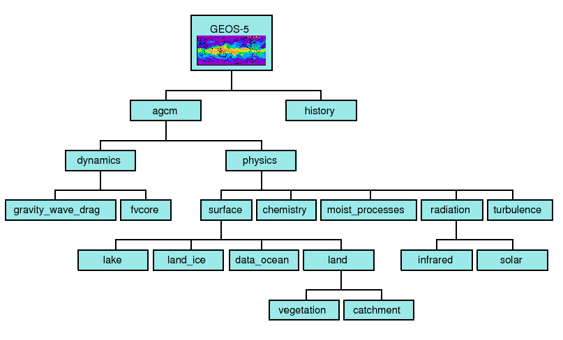
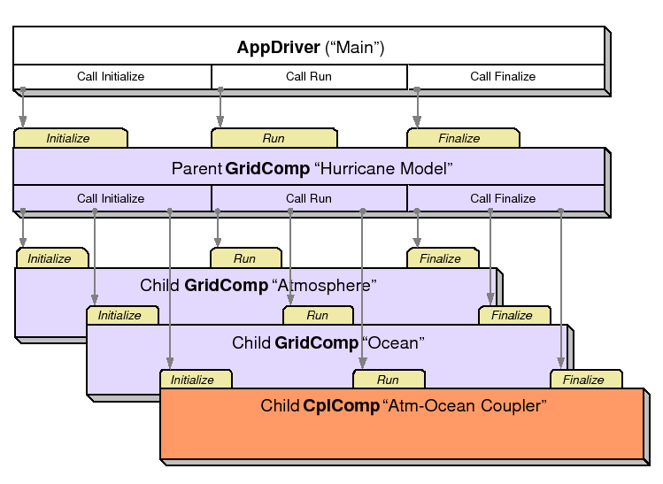
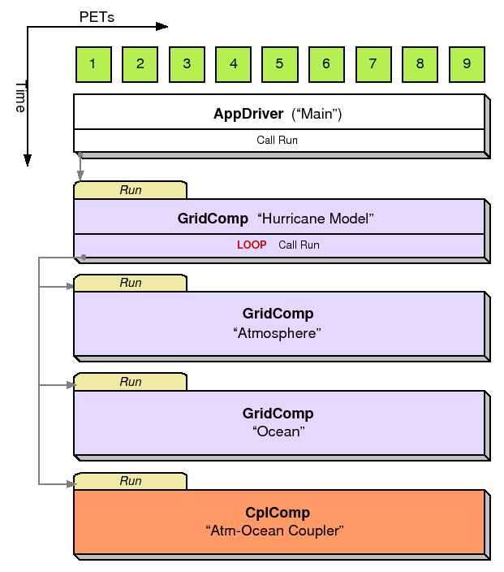
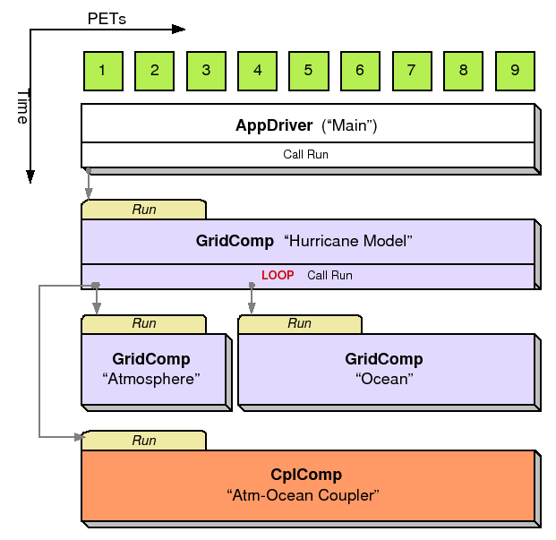
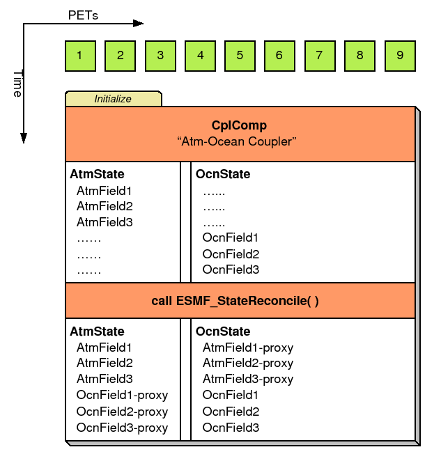

ESMF superstructure classes define an architecture for assembling Earth system applications from modeling components. A component may be defined in terms of the physical domain that it represents, such as an atmosphere or sea ice model. It may also be defined in terms of a computational function, such as a data assimilation system. Earth system research often requires that such components be coupled together to create an application. By coupling we mean the data transformations and, on parallel computing systems, data transfers, that are necessary to allow data from one component to be utilized by another. ESMF offers regridding methods and other tools to simplify the organization and execution of inter-component data exchanges.
In addition to components defined at the level of major physical domains and computational functions, components may be defined that represent smaller computational functions within larger components, such as the transformation of data between the physics and dynamics in a spectral atmosphere model, or the creation of nested higher resolution regions within a coarser grid. The objective is to couple components at varying scales both flexibly and efficiently. ESMF encourages a hierachical application structure, in which large components branch into smaller sub-components (see Figure 2). ESMF also makes it easier for the same component to be used in multiple contexts without changes to its source code.
|
Key Features |
| Modular, component-based architecture. |
| Hierarchical assembly of components into applications. |
| Use of components in multiple contexts without modification. |
| Sequential or concurrent component execution. |
| Single program, multiple datastream (SPMD) applications for maximum portability and reconfigurability. |
| Multiple program, multiple datastream (MPMD) option for flexibility. |
There are a small number of classes in the ESMF superstructure:
The second part of an ESMF Component is user code, such as a model or data assimilation system. Users set entry points within their code so that it is callable by the framework. In practice, setting entry points means that within user code there are calls to ESMF methods that associate the name of a Fortran subroutine with a corresponding standard ESMF operation. For example, a user-written initialization routine called myOceanInit might be associated with the standard initialize routine of an ESMF Gridded Component named ``myOcean'' that represents an ocean model.
An ESMF coupled application typically involves an AppDriver, a parent Gridded Component, two or more child Gridded Components that require an inter-component data exchange, and one or more Coupler Components.
The parent Gridded Component is responsible for creating the child Gridded Components that are exchanging data, for creating the Coupler, for creating the necessary Import and Export States, and for setting up the desired sequencing. The AppDriver ``main'' routine calls the parent Gridded Component's initialize, run, and finalize methods in order to execute the application. For each of these standard methods, the parent Gridded Component in turn calls the corresponding methods in the child Gridded Components and the Coupler Component. For example, consider a simple coupled ocean/atmosphere simulation. When the initialize method of the parent Gridded Component is called by the AppDriver, it in turn calls the initialize methods of its child atmosphere and ocean Gridded Components, and the initialize method of an ocean-to-atmosphere Coupler Component. Figure 3 shows this schematically.
|  |
Components are allocated computational resources in the form of Persistent Execution Threads, or PETs. A list of a Component's PETs is contained in a structure called a Virtual Machine, or VM. The VM also contains information about the topology and characteristics of the underlying computer. Components are created hierarchically, with parent Components creating child Components and allocating some or all of their PETs to each one. By default ESMF creates a new VM for each child Component, which allows Components to tailor their VM resources to match their needs. In some cases a child may want to share its parent's VM - ESMF supports this too.
A Gridded Component may exist across all the PETs in an application. A Gridded Component may also reside on a subset of PETs in an application. These PETs may wholly coincide with, be wholly contained within, or wholly contain another Component.
|  |
When a set of Gridded Components and a Coupler runs in sequence on the same set of PETs the application is executing in a sequential mode. When Gridded Components are created and run on mutually exclusive sets of PETs, and are coupled by a Coupler Component that extends over the union of these sets, the mode of execution is concurrent.
Figure 4 illustrates a typical configuration for a simple coupled sequential application, and Figure 5 shows a possible configuration for the same application running in a concurrent mode.
Parent Components can select if and when to wait for concurrently executing child Components, synchronizing only when required.
It is possible for ESMF applications to contain some Component sets that are executing sequentially and others that are executing concurrently. We might have, for example, atmosphere and land Components created on the same subset of PETs, ocean and sea ice Components created on the remainder of PETs, and a Coupler created across all the PETs in the application.
|  |
|  |
All data transfers within an ESMF application occur within a component. For example, a Gridded Component may contain halo updates. Another example is that a Coupler Component may redistribute data between two Gridded Components. As a result, the architecture of ESMF does not depend on any particular data communication mechanism, and new communication schemes can be introduced without affecting the overall structure of the application.
Since all data communication happens within a component, a Coupler Component must be created on the union of the PETs of all the Gridded Components that it couples.
The scope of distributed objects is the VM of the currently executing Component. For this reason, all PETs in the current VM must make the same distributed object creation calls. When a Coupler Component running on a superset of a Gridded Component's PETs needs to make communication calls involving objects created by the Gridded Component, an ESMF-supplied function called ESMF_StateReconcile() creates proxy objects for those PETs that had no previous information about the distributed objects. Proxy objects contain no local data but can be used in communication calls (such as regrid or redistribute) to describe the remote source for data being moved to the current PET, or to describe the remote destination for data being moved from the local PET. Figure 6 is a simple schematic that shows the sequence of events in a reconcile call.
|  |
The ESMF design enables the user to configure ESMF applications so that data is transferred directly from one component to another, without requiring that it be copied or sent to a different data buffer as an interim step. This is likely to be the most efficient way of performing inter-component coupling. However, if desired, an application can also be configured so that data from a source component is sent to a distinct set of Coupler Component PETs for processing before being sent to its destination.
The ability to overlap computation with communication is essential for performance. When running with ESMF the user can initiate data sends during Gridded Component execution, as soon as the data is ready. Computations can then proceed simultaneously with the data transfer.
The following is a simplified UML diagram showing the relationships among ESMF superstructure classes. See Appendix A, A Brief Introduction to UML, for a translation table that lists the symbols in the diagram and their meaning.
The ESMF Application Driver (ESMF_AppDriver), is a generic ESMF driver program that contains a ``main.'' Simpler applications may be able to use an Application Driver without modification; for more complex applications, an Application Driver can be used as an extendable template.
ESMF provides a number of different Application Drivers in the $ESMF_DIR/src/Superstructure/AppDriver directory. An appropriate one can be chosen depending on how the application is to be structured. Options when deciding how to structure an application include choices about:
In a sequential execution model every Component executes on all PETs, with each Component completing execution before the next Component begins. This has the appeal of simplicity of data consumption and production: when a Gridded Component starts all required data is available for use, and when a Gridded Component finishes all data produced is ready for consumption by the next Gridded Component. This approach also has the possibility of less data movement if the grid and data decomposition is done such that each processor's memory contains the data needed by the next Component.
In a concurrent execution model subgroups of PETs run Gridded Components and multiple Gridded Components are active at the same time. Data exchange must be coordinated between Gridded Components so that data deadlock does not occur. This strategy has the advantage of allowing coupling to other Gridded Components at any time during the computational process, including not having to return to the calling level of code before making data available.
Coupler Components are responsible for taking data from one Gridded Component and putting it into the form expected by another Gridded Component. This might include regridding, change of units, averaging, or binning.
Coupler Components can be written for pairwise data exchange: the Coupler Component takes data from a single Component and transforms it for use by another single Gridded Component. This simplifies the structure of the Coupler Component code.
Couplers can also be written using a hub and spoke model where a single Coupler accepts data from all other Components, can do data merging or splitting, and formats data for all other Components.
Multiple Couplers, using either of the above two models or some mixture of these approaches, are also possible.
The ESMF framework currently has Fortran interfaces for all public functions. Some functions also have C interfaces, and the number of these is expected to increase over time.
The simplest way to run an application is to run the same executable program on all PETs. Different Components can still be run on mutually exclusive PETs by using branching (e.g., if this is PET 1, 2, or 3, run Component A, if it is PET 4, 5, or 6 run Component B). This is a SPMD model, Single Program Multiple Data.
The alternative is to start a different executable program on different PETs. This is a MPMD model, Multiple Program Multiple Data. There are complications with many job control systems on multiprocessor machines in getting the different executables started, and getting inter-process communcations established. ESMF currently has some support for MPMD: different Components can run as separate executables, but the Coupler that transfers data between the Components must still run on the union of their PETs. This means that the Coupler Component must be linked into all of the executables.
There are a few methods that every ESMF application must contain. First, ESMF_Initialize() and ESMF_Finalize() are in complete analogy to MPI_Init() and MPI_Finalize() known from MPI. All ESMF programs, serial or parallel, must initialize the ESMF system at the beginning, and finalize it at the end of execution. The behavior of calling any ESMF method before ESMF_Initialize(), or after ESMF_Finalize() is undefined.
Second, every ESMF Component that is accessed by an ESMF application requires that its set services routine is called through ESMF_<Grid/Cpl>CompSetServices(). The Component must implement one public entry point, its set services routine, that can be called through the ESMF_<Grid/Cpl>CompSetServices() library routine. The Component set services routine is responsible for setting entry points for the standard ESMF Component methods Initialize, Run, and Finalize.
Finally, the Component library call ESMF_<Grid/Cpl>CompSetVM() can optionally be issues before calling ESMF_<Grid/Cpl>CompSetServices(). Similar to ESMF_<Grid/Cpl>CompSetServices(), the ESMF_<Grid/Cpl>CompSetVM() call requires a public entry point into the Component. It allows the Component to adjust certain aspects of its execution environment, i.e. its own VM, before it is started up.
The following sections discuss the above mentioned aspects in more detail.
INTERFACE:
int ESMC_Initialize(RETURN VALUE:
int return codeARGUMENTS:
int *rc, // return code
...); // optional arguments
#define ESMC_InitArgDefaultConfigFilename(ARG) \
ESMCI_Arg(ESMCI_InitArgDefaultConfigFilenameID,ARG)
DESCRIPTION:
Initialize the ESMF. This method must be called before any other ESMF methods are used. The method contains a barrier before returning, ensuring that all processes made it successfully through initialization.
Typically ESMC_Initialize() will call MPI_Init() internally unless MPI has been initialized by the user code before initializing the framework. If the MPI initialization is left to ESMC_Initialize() it inherits all of the MPI implementation dependent limitations of what may or may not be done before MPI_Init(). For instance, it is unsafe for some MPI implementations, such as MPICH, to do IO before the MPI environment is initialized. Please consult the documentation of your MPI implementation for details.
Before exiting the application the user must call ESMC_Finalize() to release resources and clean up the ESMF gracefully.
The arguments are:
A Gridded Component is a computational entity which consumes and produces data. It uses a State object to exchange data between itself and other Components. It uses a Clock object to manage time, and a VM to describe its own and its child components' computational resources.
This section shows how to create Gridded Components. For demonstrations of the use of Gridded Components, see the system tests that are bundled with the ESMF software distribution. These can be found in the directory esmf/src/system_tests.
The code in this file defines the public C Comp class and declares global variables to be used in user code written in C.
In a large, multi-component application such as a weather forecasting or climate prediction system running within ESMF, physical domains and major system functions are represented as Gridded Components (see Section 5.1). A Coupler Component, or ESMF_CplComp, arranges and executes the data transformations between the Gridded Components. Ideally, Coupler Components should contain all the information about inter-component communication for an application. This enables the Gridded Components in the application to be used in multiple contexts; that is, used in different coupled configurations without changes to their source code. For example, the same atmosphere might in one case be coupled to an ocean in a hurricane prediction model, and in another coupled to a data assimilation system for numerical weather prediction.
Like Gridded Components, Coupler Components have two parts, one that is provided by the user and another that is part of the framework. The user-written portion of the software is the coupling code necessary for a particular exchange between Gridded Components. The term ``user-written'' is somewhat misleading here, since within a Coupler Component the user can leverage ESMF infrastructure software for regridding, redistribution, lower-level communications, calendar management, and other functions. However, ESMF is unlikely to offer all the software necessary to customize a data transfer between Gridded Components. ESMF does not currently offer tools for unit tranformations or time averaging operations, so users must manage those operations themseves.
The user-written Coupler Component code must be divided into separately callable initialize, run, and finalize methods. The interfaces for these methods are prescribed by ESMF.
The second part of a Coupler Component is the ESMF_CplComp derived type within ESMF. The user must create one of these types to represent a specific coupling function, such as the regular transfer of data between a data assimilation system and an atmospheric model. 1
The user-written part of a Coupler Component is associated with an ESMF_CplComp derived type through a routine called SetServices. This is a routine that the user must write, and declare public. Inside the SetServices routine the user must call ESMF_SetEntryPoint methods that associate a standard ESMF operation with the name of the corresponding Fortran subroutine in their user code. For example, a user routine called ``couplerInit'' might be associated with the standard initialize routine in a Coupler Component.
Coupler Components can be written to transform data between a pair of Gridded Components, or a single Coupler Component can couple more than two Gridded Components.
A Coupler Component manages the transformation of data between Components. It contains a list of State objects and the operations needed to make them compatible, including such things as regridding and unit conversion. Coupler Components are user-written, following prescribed ESMF interfaces and, wherever desired, using ESMF infrastructure tools.
A State contains the data and metadata to be transferred between ESMF components. It is an important class, because it defines a standard for how data is represented in data transfers between Earth science Components. The State construct is a rational compromise between a fully prescribed interface - one that would dictate what specific fields should be transferred between components - and an interface in which data structures are completely ad hoc.
There are two types of States, import and export. An import State contains data that is necessary for a Gridded Component or Coupler Component to execute, and an export State contains the data that a Gridded Component or Coupler Component can make available.
States can contain Arrays, ArrayBundles, Fields, FieldBundles, and other States. They cannot directly contain Fortran arrays. Objects in a State must span the VM on which they are running. For sequentially executing components which run on the same set of PETs this happens by calling the object create methods on each PET, creating the object in unison. For concurrently executing components which are running on subsets of PETs, an additional reconcile method is provided by the ESMF to broadcast information about objects which were created in sub-components.
State methods include creation and deletion, adding and retrieving data items, adding and retrieving attributes, and performing queries.
Even if the user follows the unison rules, if components are running on a subset of the PETs, when they return to the parent (calling) component the next available ID will potentially not be the same across all PETs in the VM. Part of the reconcile process or part of the return to the parent will need to have a broadcast which sends the current ID number, and all PETs can reset the next available number to the highest number broadcast. This could be an async call to avoid as much as possible serialization and barrier issues.
Default object names are based on the object id (e.g. "Field1", "Field2") to create unique object names, so basing the detection of unique objects on the name instead of on the object id is no better solution.
The code in this file defines the public C State